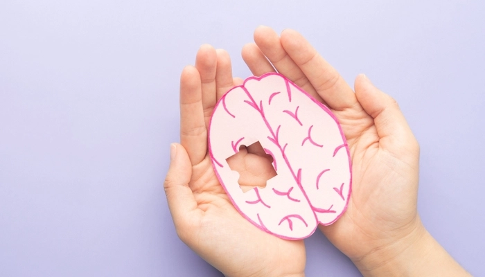

VanwAnhs
|  | |
 |
 |
Taylor Alison Swift (sinh ngày 13 tháng 12 năm 1989) là một nữ ca sĩ kiêm nhạc sĩ sáng tác bài hát người Mỹ. Cô là người sở hữu phong cách sáng tác nhạc mang đậm chất tự sự, khả năng biến hóa không ngừng trong nghệ thuật và tầm ảnh hưởng văn hóa sâu rộng. Swift được đánh giá là một nhân vật tiêu biểu trong nền âm nhạc đại chúng và là tâm điểm thu hút mọi sự chú ý của công chúng.
Swift bắt đầu theo đuổi con đường sáng tác âm nhạc chuyên nghiệp ngay từ khi mới 14 tuổi. Cô ký hợp đồng với hãng thu âm Big Machine Records vào 2005, trở thành một nghệ sĩ nhạc đồng quê và cô thường được mệnh danh là "công chúa nhạc đồng quê" kể từ đó. Tại Big Machine Records, Swift phát hành sáu album phòng thu và hết bốn album phòng thu đầu từng được gửi đến đài phát thanh nhạc đồng quê, khởi đầu là album đầu tay Taylor Swift (2006). Tiếp đến, cô cho ra mắt Fearless (2008) nhằm khám phá chất liệu pop pha trộn với đồng quê, cùng với hai đĩa đơn "Love Story" và "You Belong with Me" giúp tên tuổi của cô đến gần với công chúng. Sau đó, Swift tiếp tục phát hành album phòng thu thứ ba, Speak Now (2010) mang đậm ảnh hưởng phong cách rock cùng với album phòng thu thứ tư Red (2012) pha trộn thêm các yếu tố nhạc điện tử, giúp cô gặt hái được ca khúc đạt vị trí quán quân đầu tiên trên bảng xếp hạng Billboard Hot 100 là "We Are Never Ever Getting Back Together". Năm 2014, Swift từ bỏ hình tượng "công chúa nhạc đồng quê" và cho ra mắt khán giả album thứ năm 1989 (2014) lấy cảm hứng từ âm hưởng synth-pop của thập niên 1980 cùng với các bài hát leo lên ngôi đầu bảng như "Shake It Off", "Blank Space" và "Bad Blood". Sự soi mói của giới truyền thông truyền cảm hứng cho cô trình làng album phòng thu thứ sáu Reputation (2017) mang ảnh hưởng của dòng nhạc hip hop cùng với đĩa đơn số một "Look What You Made Me Do".